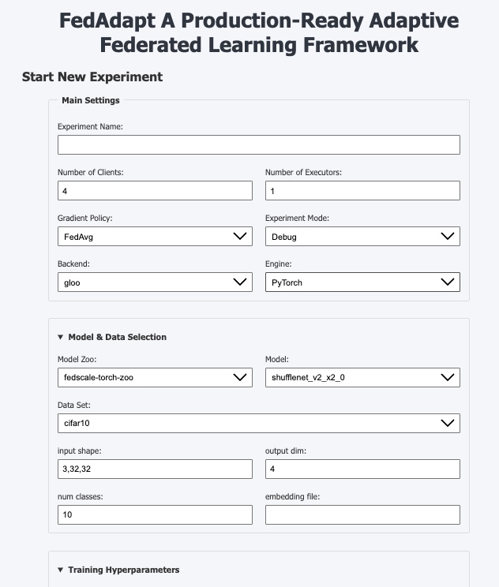
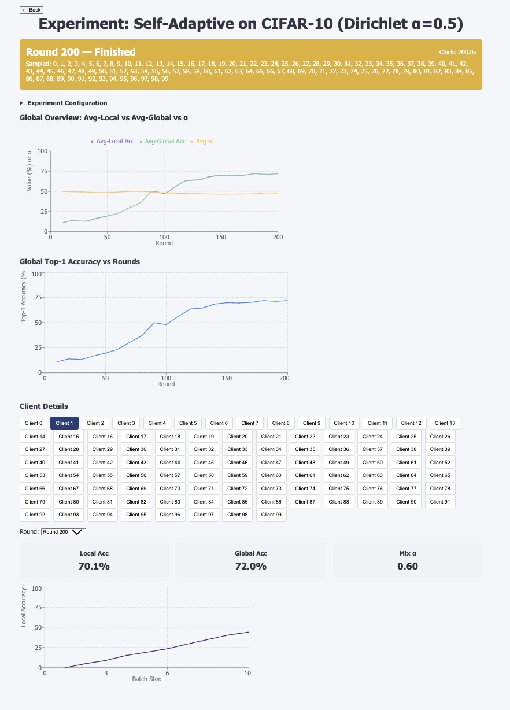

Live Dashboard
FedAdapt’s real-time web UI to launch and monitor federated experiments.
🚀 Quick Start
1. Backend
cd dashboard-backend
pip install -r requirements.txt
uvicorn app.main:app --reload --port 8000
<!-- ```` -->
### 2. Frontend
```bash
cd dashboard-frontend
npm install
npm run dev
Your dashboard will be available at:
- Backend API:
http://localhost:8000 - Frontend UI:
http://localhost:3000
🏗 Architecture Overview
┌──────────────────────┐ gRPC ┌────────────────────┐
│ FastAPI / Uvicorn │◀──────────────▶│ FedScale Aggregator│
│ (dashboard-backend) │ │ & Executor │
└──────────────────────┘ └────────────────────┘
│
│ HTTP / SSE
▼
┌──────────────────────┐
│ React + Vite │
│ (dashboard-frontend) │
└──────────────────────┘
-
dashboard-backend
-
FastAPI (REST + Server-Sent Events)
- Spawns FedScale Aggregator & Executor processes
-
Proxies gRPC to HTTP/SSE endpoints
-
dashboard-frontend
-
React + Vite
- Axios for REST calls
- EventSource for live updates (SSE)
- React Router for navigation
🔌 Backend Endpoints
| Method | Path | Description |
|---|---|---|
| POST | /experiments |
Start a new experiment |
| GET | /experiments |
List active experiments |
| POST | /experiments/{id}/stop |
Stop a running experiment |
| GET | /experiments/{id}/status |
Current round, running flag, sampled clients |
| GET | /experiments/{id}/round/{r}/metrics |
Metrics for round r |
| GET | /experiments/{id}/stream |
SSE stream of status & metrics |
| GET | /experiments/{id}/data |
Raw JSON payloads from data/{id}/ |
| GET | /experiments/{static_id}/static |
Static results for completed experiments |
| GET | /health |
Health check → {"status":"ok"} |
ExperimentStartRequest schema
{
"name": "string",
"num_executors": 1,
"num_clients": 4,
"gradient_policy": "FedAvg",
"experiment_mode": "SIMULATION",
"backend": "gloo",
"engine": "pytorch",
"model_zoo": "vision",
"model": "resnet18",
"data_set": "cifar10",
"data_dir": "/data",
"input_shape": "3,32,32",
"output_dim": 10,
"num_classes": 10,
"rounds": 5,
"local_steps": 1,
"batch_size": 8,
"eval_interval": 1,
"optimize_for": "Balanced",
"compression_limit": 0.5,
"auto_tune": true,
"alpha_threshold": 0.02,
"alpha_step": 0.10
}
🖥️ UI Walkthrough
1. Start New Experiment

- Main Settings: experiment name, number of clients/executors, FL mode
- Model & Data: select model zoo, dataset, input shape, classes
- Training Hyperparameters: rounds, batch size, learning rate, etc.
- Heterogeneity Co-Opt: optimization target, compression limit
- Self-Adaptive Personalization: α threshold & step
Click Start Experiment → you’ll be redirected to the live metrics view.
2. Completed Experiments

- Expand each experiment group
- Click a variant to view its static results page
3. Live Metrics
- Global Charts: test loss & accuracy vs. round
- Client Panels: per-client loss, duration, α trajectories
- Bandwidth Savings (when compression is enabled)
- Straggler Profiles: visualizing slow clients
All live updates stream over SSE from /experiments/{id}/stream.
🔧 Production Notes
- CORS is currently unrestricted (
allow_origins: ["*"])—lock it down for production. - Ensure the FedScale aggregator gRPC server is listening on
127.0.0.1:50051.
Next up: Self-Adaptive Personalization